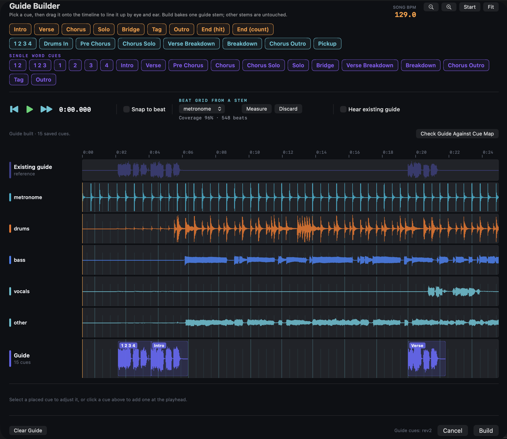
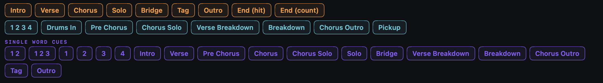

Contents
- Welcome
- Install and first launch
- Quick Start: your first song
- Quick Start: your first show
- The Welcome Tour
- How StemDeck thinks about audio
- Songs, stems, and setlists
- Song time and file time
- Beat alignment and BPM
- Stereo and multichannel
- Your library folder and this Mac’s settings
- The library folder
- Song folders and names
- Importing songs
- Sharing songs: StemDeck packages
- Renaming and deleting songs
- Snapshots and recovery
- Backing up your library
- When the library is moved or unavailable
- Housekeeping commands
- Adding stems to a song
- Stem cards
- Trimming silence: Song Start and Song End
- Setting downbeats and computing BPM
- Adding a click track and a lead-in
- Mute regions
- The Timeline Editor
- What a guide track is
- Before you start
- Opening the Guide Builder
- The cue palette
- Placing, moving, and deleting cues
- A beat grid measured from a stem
- Build and re-Build
- Cue revisions
- Checking a guide against its cue map
- Recording your own cues
- Transport controls
- GO and LOOP
- Setlists
- Pitch and tempo
- Channel strips
- Master
- The waveform
- Level Song Volumes
- Choosing the output device
- Stereo and multichannel
- How a stem gets its output
- Setting an output by hand (the pin)
- The Assign Outputs prompt
- Editing the routing rules
- Clearing manual outputs
- Behringer X32 RACK
- Soundcraft Ui24R
- Sample rate, buffers, and latency
- Connecting a MIDI controller
- Default MIDI commands
- Changing the mapping
- Remote control from a phone or tablet
- Why export a mix
- Exporting
- What the export contains
- Menu bar
- Keyboard and mouse shortcuts
- Settings
- Where StemDeck keeps things
- Subscription and account
- Pre-show checklist
- If the library shows moved or unavailable
- Backups that actually restore
- Troubleshooting
- Getting help
- Glossary
- Credits
- Version history
Welcome
StemDeck is a Mac app for playing backing stems live. A stem is one part of a recording saved as its own audio file: the drums, the bass, a keyboard part, a click track. StemDeck plays every stem of a song in perfect sync and sends each one to its own output on your audio interface, so the sound engineer can mix your tracks at the console the same way they mix the band.
StemDeck is built for the stage, not the studio. It does not record your band, edit audio, or warp anything. Files play at their native sample rate. Pitch and tempo are the only changes it makes to the sound, and click, count-in, and guide tracks are left alone when you transpose a song.
This guide is for the musician or music director who runs the laptop. It assumes you know what a fader, a channel, and a click track are. It does not assume you have used a DAW. Every part stands on its own; read front to back, or jump straight to what you need.
About this version
This edition covers StemDeck 1.6.2 on macOS 14 (Sonoma) or later. If something on screen does not match what you read here, trust the app and check for a newer guide at www.stemdeck44.com/guide. The same page offers this guide as a PDF.
How to use this guide
- Part 1, Get Started, takes you from install to your first song and your first show. Read it once.
- Part 2, Concepts, explains how StemDeck thinks: song time versus file time, the beat grid, what travels with your library and what stays on this Mac. Read it before you build a lot of songs.
- Part 3, Your Library and Keeping It Safe, covers importing songs, sharing them between laptops, snapshots, and what to do when StemDeck cannot find your library.
- Parts 4 through 9 are the workflows: building songs, the Guide Builder, performing, routing to your console, MIDI and phone remote, and exporting a rehearsal mix.
- Part 10, Reference, lists every menu item, shortcut, and setting.
- Part 11, Stage Notes and Troubleshooting, is the part to reread before the first gig of every run.
Three kinds of callout appear throughout:
Tip A faster or easier way to do something. Optional.
Stage Note Something the audience or the band will hear if it is wrong. Reliability matters more than convenience here.
Warning An action that can lose work or cause an audible failure on stage. Read before you proceed.
Keyboard shortcuts look like this: ⇧⌘?. Menu paths look like Song → Align Beat Grid…. A full list is in Part 10.
What’s new in 1.6
If you used StemDeck earlier this year, these are the changes you will notice most. Details are in the parts named.
Your library is a folder of song folders. Songs now
live in a folder you choose (the default is
~/Music/StemDeck), one folder per song with the stems
inside. Drop a folder into it in Finder and StemDeck picks it up on the
next rescan. Copy the folder to another Mac and your songs, setlists,
markers, and guide cues come along. Part 3.
StemDeck never loses track of your library silently. If the library folder was moved, renamed, or is on a drive that is not plugged in, StemDeck stops and asks before loading or changing anything. A caption under the setlist header tells you when the library is offline, and Library → Reconnect Library brings it back. Cloud-synced folders (iCloud Drive, Dropbox, Google Drive) get a warning, because sync services can move audio out from under a running show. Part 3.
Import several songs at once. Drag a stack of song folders onto the library, or use File → Import Folder… (⇧⌘N). One copy-or-move choice applies to the whole batch, folders that are already songs are skipped so their markers stay intact, and a summary shows what happened. Part 3.
Snapshots protect songs, not just settings. Every snapshot now holds each song’s markers, tempo, guide cue map, faders, and setlists. One is taken at launch and before every bulk change, and File → Save Snapshot (⇧⌘S) takes one on demand. Restore shows you what would change before it touches anything. Snapshots never include audio; back up the library folder for that. Part 3.
Outputs you set by hand stay set. Type an output number on a stem card and a filled amber pin appears: that stem keeps its output on every Mac, no matter what the routing rules say. Click the pin to go back to the rules. When a new stem’s filename matches no rule, StemDeck asks you to choose an output instead of quietly parking it on output 1, the click output, and flags the song in the list until you do. Part 7.
The live outputs are 1 to 4. The default rules now put the click on output 1, count-in and guide on 2, drums on 3, bass on 4 (keys 5, guitar 7, vocals 9). “Metronome” in a filename counts as a click. Part 7.
A better fader. Faders are taller, with printed marks from +12 down to −48 dB. Unity (0 dB) sits three-quarters of the way up, the same place as on a live console. Hold ⌥ while dragging for fine control, and double-click any fader (including MASTER) to snap it back to 0 dB. Part 6.
Guide Builder: spoken cues that tell the band where they are. Place cues like “Chorus 2 3 4” on a timeline and Build a guide stem that plays in the in-ears. The cue library ships in revisions so a song you built last month keeps sounding the same until you choose to upgrade. StemDeck can measure a real beat grid from your click or drum stem, and can check a built guide against its cue map. You can also record your own voice cues with the Rec button. Part 5.
Timeline Editor: turn one bar of count-in into two. Select the count-in on your click stem and Copy Selection to Start places a copy so it ends exactly on Downbeat 1. Every other stem shifts (or the song start moves) to match, and you can revert. On a trackpad, swipe pans and pinch zooms. Part 4.
Level Song Volumes. One command measures how loud every song really is on outputs 1 to 4 and proposes fader moves so the set plays at a consistent level. Nothing changes until you review and Apply, and Revert Volume Leveling puts every fader back. Part 6.
A real menu bar. Transport, Song, Setlist, and Library menus put every command in one place, with Rename Song, Assign Outputs, Guide Builder, Timeline Editor, and Export Mix (⇧⌘E) alongside. Waveform zoom lives in the View menu (⌘=, ⌘−, ⌘0). The Help menu links to this guide. Part 10.
Also: a Pause button (Stop still rewinds), mute regions painted on the waveform with ⌥-drag, an optional Song End marker, tempo shown in BPM once a song has an Original BPM, a MUTE ALL kill switch on the master, remote control from a phone with a PIN and an encrypted connection, and packages you can export and import to share a song or a whole setlist with a bandmate’s Mac.
Part 1
Get Started
Install and first launch
StemDeck is a Mac app. Install it from the Mac App Store like any other app: search for StemDeck44, click Get, and let macOS download and install it. The app itself is free to download; performing requires a StemDeck Pro subscription with a 7-day free trial (see Subscription and account in Part 10).
Choosing your library folder
The first time you launch StemDeck, it asks you to choose a folder on disk to be your library. Every song you build lives inside this one folder, as its own subfolder. Pick a folder and StemDeck remembers it for this Mac.
If you are not sure where to put it, accept the default. It lives at
~/Music/StemDeck and that is where the rest of this guide
assumes your library sits.
Warning Do not point your library at a folder inside iCloud Drive, Dropbox, OneDrive, Google Drive, or Box, and do not use your Desktop or Documents folder if either syncs to iCloud. StemDeck will warn you:
“This folder is synced to the cloud. Sync services can evict audio files to save space or create duplicate copies, which can make songs fail to load. A local folder such as ~/Music/StemDeck is recommended.”
Cloud sync was built for documents, not for gigabytes of WAV files you need to play back instantly on stage. A stem that got silently evicted to save space is a stem that goes quiet in the middle of a song. Choose a plain local folder.
Once a folder is chosen, the Welcome Tour appears after a short pause. It is a seven-step walkthrough of the main window, covered in full at the end of this part. Click through it once so the layout makes sense, or skip it and come back to it later from Help → Show Welcome Tour (⇧⌘?).
First-launch checklist
Before you build your first song, take care of three things.
Audio output device. Open Settings → Audio (⌘,) and choose the device StemDeck should play through. On a laptop with headphones this can stay at System Default. For a stage rig, choose your multi-channel interface, for example a Behringer X32 RACK. StemDeck tells you right there whether the device you picked supports per-stem routing or is stereo-only.
Library folder. Confirm the folder you chose above in Settings → Library. You can change it later, but every song currently in the old folder stays there until you move it.
MIDI controller (optional). If you plan to run StemDeck hands-free from a foot controller, connect it now and check its channel and CC mappings in Settings → MIDI. You do not need this to get started.
With those three settled, you are ready to build a song.
Quick Start: your first song
This walkthrough takes a folder of stem files and turns it into a playable StemDeck song. Once you have done it a couple of times it takes under a minute.
What you need
A folder containing the stem files for one song: WAV, AIFF, or MP3 files, one per instrument, named so you can tell them apart (for example Neon Moon - DRUMS.wav, Neon Moon - BASS.wav, Neon Moon - CLICK.wav). Name the folder itself with the song’s BPM in parentheses, like Neon Moon (110). StemDeck reads that number straight out of the folder name, so you never have to type the tempo in by hand.
Step 1: bring the folder in
You have two equivalent ways to do this:
- Choose File → Import Folder… (⇧⌘N) and pick the song folder in the panel that opens.
- Or just drag the song folder from Finder and drop it onto the library sidebar.
Either way, an import sheet appears showing what StemDeck found inside, and a “How to import” choice: Copy, Move, or Reference in place. Copy leaves your original folder untouched and duplicates the stems into your library, which is the safe default if the folder lives somewhere else on your Mac. Move relocates the folder into your library outright. Reference in place only applies if the folder is already inside your library.
Click the Import button and the song appears in your library, already built.
Step 2: see what happened automatically
Open the song and look at the stem mixer. Without you touching a single setting:
- Each stem got a display name with the song-name prefix stripped off. Neon Moon - DRUMS.wav shows up simply as DRUMS.
- Each stem got a color based on what it is: drums are orange, bass is blue, a click or count/guide stem gets its own tint.
- Each stem got routed to an output channel by matching words in its filename against the routing rules in Settings → Channels. A file with “drum” in its name goes to output 3, “bass” to output 4, and so on. The full default table is in How a stem gets its output in Part 7.
If one of your files does not match any rule, for example a stem named “Piano Fill” with no recognizable keyword, StemDeck does not just guess. It opens “Choose outputs for new stems” and asks you to pick an output for that stem before you go further. Anything you leave blank plays on output 1, the click output, and is flagged with a warning triangle next to the song in the sidebar so you notice before a show, not during one.
Step 3: verify playback
Select the song, press GO or the Space bar, and listen. Watch the stem mixer while it plays: every fader should show level, nothing should be muted, and the OUT numbers should match what you expect on your interface.
That is it. There is no save step. StemDeck writes the song’s folder and its stem list to disk the moment you import, and every change you make afterward (a fader move, a renamed stem, a marked downbeat) is written as you make it. You can quit the app or pull the power cord and nothing is lost.
Quick Start: your first show
Run through this before you open the set, every time.
Check the device. Settings → Audio shows the device StemDeck is using. Confirm it is the interface actually connected, not System Default left over from rehearsal at home.
Check the outputs. Open a song and glance down the stem mixer’s OUT numbers. Any stem with an amber-tinted OUT widget fell back to output 1 because nothing routed it. Fix that before downbeat, not after.
MUTE ALL is off. The MASTER strip has one big stage-sized button. While engaged it reads “MUTED”. Make sure it does not.
MASTER at 0 dB. Double-click the MASTER fader to snap it back to unity if it has drifted.
GO to start the first song. Press the GO button, or just hit Space. Both do the same thing: load the selected song from the top and start it, arming the click lead-in if one is set.
When a song ends, the next one loads and waits. If you are running a setlist, the moment one song finishes, the next one is already loaded and sitting at 0:00, waveform visible, ready. It does not start on its own. Press GO or Space again when you are ready.
Stop rewinds. Pause holds. The Stop button always returns the playhead to 0:00. The Play/Pause button, when it is showing pause, holds exactly where you are, for the moment the singer needs a beat to catch a breath between songs without losing the place.
Stage Note If LOOP is on, Space does not start playback. It turns the loop off instead, on purpose, so a fumbled spacebar can never trap the band in a vamp they did not ask for. Press Space once to turn the loop off, then again for GO.
The Welcome Tour
The tour is seven steps. Each one anchors a bubble to the part of the window it is describing. Click Next to move on, or Skip Tour to leave at any point. Replay it any time from Help → Show Welcome Tour (⇧⌘?).
Your Library. Songs and setlists live in the sidebar. Click a song to load it; drag the divider to resize the column.
Waveform. Click anywhere to seek, scroll or pinch to zoom, and use Align Beat Grid to mark downbeats and Set Start / Set End to define a loop region.
Transport. Play, stop, rewind, pitch, tempo, tap tempo, and guide-vocal recording all live in this one row.
GO / LOOP. GO is the big play button (the spacebar works too). LOOP plays the vamp region you set on the waveform, and only lights up once Start and End are placed.
Stem Mixer. One channel strip per stem. Faders run from silence up to +12 dB. M mutes, S solos. Click the OUT number to route a stem to a different output.
Add Stems, Auto-Routed. Drag audio files here, or click to pick them. Filenames containing words like “click,” “drum,” “bass,” or “vocal” are auto-routed to their default output channel, the same auto-routing you just saw happen in Quick Start: your first song. Tweak the patterns in Settings → Channels.
Master + Export. The MASTER fader controls the whole mix. Right-click it for Export Mix, which bounces the song, click and lead-in included, to a file your bandmates can rehearse against.
Part 2
Concepts
How StemDeck thinks about audio
A few decisions run through the whole app. Understanding them now will save you confusion later, when you are wondering why something works the way it does.
One clock
Every stem in a song is played by a single shared engine against a single clock. All of them start together at a sample-accurate instant and stay together for the length of the song. This is different from opening several audio files in separate players, which each keep their own clock and drift apart over time. Every transport action, GO, Stop, seek, loop, applies to the whole song at once. If you need one stem to start later than the rest on purpose, or a click nudged a few milliseconds, you do it with an explicit per-stem setting on the stem card (see Stem cards in Part 4), and the setting is saved with the song.
Native rate, only pitch and tempo
StemDeck never resamples your stems to make them uniform. If one file is 44.1 kHz and another is 48 kHz, both play at their own native rate and are only converted where needed to match your output device. Your original recordings are never touched.
The only transforms StemDeck applies are pitch (up to ±12 semitones) and tempo (0.5× to 2.0×, or a BPM once you have set one). There is no EQ, no compression, no reverb, no pitch correction. That kind of processing belongs on your mixer: because StemDeck sends each stem to its own output, every stem arrives on its own console channel, where you have the channel EQ, dynamics and effects you already use for the live band, and you can adjust them in the room. If a stem needs fixing that can’t be done live, fix it in the file before it reaches StemDeck.
Click (or metronome), count, and guide stems are the one exception to pitch: they bypass transposition entirely, so a click at 120 BPM stays a click at 120 BPM when you transpose the song from A to B flat. They still follow tempo changes, so the click stays locked to the beat.
What StemDeck writes, and what it never touches
For the most part, StemDeck does not create or modify audio files. Deleting a song, renaming a stem, moving a fader, marking a downbeat: none of that touches the files on disk. Your original recordings stay exactly as they were, which is why it is safe to point StemDeck at stems you also share with a DAW project or with a bandmate.
There are exactly three things StemDeck does write new audio for, and each one always creates a brand new file inside the song’s own folder, leaving anything you brought in untouched:
- A generated click track (Song → Generate Click Track…).
- A built guide track (the Guide Builder, Part 5).
- A Timeline Editor bake, such as Copy Selection to Start (Part 4).
In every one of these cases the new file lives alongside your stems. An old generated file it replaces (a previous click, an earlier bake) goes to the Trash rather than being deleted outright, and a replaced guide is kept in the song folder under a dated name.
Songs, stems, and setlists
A song is a folder in your library, holding one or more stems (the individual audio files: drums, bass, vocal, click, and so on) plus the song’s own settings: its downbeat, its BPM, its output routing, its markers. Everything about how a song plays lives with that song, in that folder.
A setlist is an ordered list of songs, nothing more. The same song can sit in several setlists at once, or in none, and can be reordered within one setlist without affecting any other. Building setlists and moving songs between them is covered in Part 6.
Song time and file time
Every stem file may have a bit of room tone, count-in, or silence before the music actually starts. StemDeck deals with this by drawing a line between two different clocks.
File time is the raw offset inside the audio file itself, starting at the first sample of the file. Song time is what you see everywhere in the app: the transport clock, the seek bar, the waveform. Song time 0:00 is wherever you tell StemDeck the song actually begins.
You set that point with Song Start, in the Align Beat Grid popover (Part 4). Mark it once, at the first note or the first beat of the count-in you want the band to hear, and every display in the app, the transport clock, the seek bar, the waveform, lines up to that point as 0:00. The audio before it is still there on disk; it is simply skipped when the song plays.
Tip If your stems already carry a spoken or clicked count-in baked into the files, use Song Start to hide it rather than trimming the file. If you also turn on StemDeck’s own click Lead-In (Part 4), you get two count-ins stacked on top of each other, one from the recording and one generated by StemDeck. Pick one. Either hide the recorded count-in with Song Start and use StemDeck’s lead-in, or leave Song Start alone and skip the lead-in.
Beat alignment and BPM
StemDeck can take a song’s tempo from the folder name or from a number you type, but the precise way is to compute it from two marks you place on the waveform.
Downbeat 1 (DB1) is the anchor: any clear downbeat, marked once, that becomes the reference point for the whole song’s beat grid. Downbeat 2 (DB2) is a second reference, always marked exactly two measures after DB1.
From those two points, StemDeck’s BPM calculator infers how many whole measures fall between DB1 and DB2 on its own. You never type a measure count. It uses your current tempo estimate to guess the measure count, checks that the guess is close enough to be trustworthy, and either offers you a precise BPM (“Set BPM to 127.34”) or tells you plainly that it could not resolve one (“Doesn’t add up — move DB2 closer, recompute, repeat.”), so you never end up with a grid that silently drifts.
This two-point method beats the alternatives for a reason worth knowing. Tap tempo, tapping along by hand, is accurate to about ±1 BPM over a short sample: fine for a rough estimate, not tight enough to keep a beat grid locked over a four-minute song. A published BPM for a song is often rounded to the nearest whole number, when the real tempo is something like 127.3. Two clean downbeats, marked on the beat, give you the song’s real tempo instead of somebody’s rounded guess.
Stereo and multichannel
Whether StemDeck sends each stem to its own output channel or folds everything into one stereo mix depends entirely on the audio device you selected in Settings → Audio. A device with more than two output channels gets full per-stem routing: drums to one channel, click to another, and so on. A device with two channels, or the built-in System Default, plays everything as a single stereo mix, and the OUT numbers on your stem cards are simply ignored (they stay visible so nothing looks broken, they just do not do anything on that device).
The practical upshot: what your OUT numbers mean depends on what is plugged in. The full routing rules, the default output table, and how to wire up a multi-channel interface live in Part 7, Routing and Outputs.
Your library folder and this Mac’s settings
StemDeck splits what it remembers into two very different places, and it matters which is which if you ever move to a second Mac or a new laptop.
Inside your library folder, and so portable with it: every song’s folder and stems, its downbeat and BPM, its tempo map, its guide cues, its setlists, and any manual output you have pinned by hand on a stem card. Copy or sync the library folder to another Mac and all of this comes along.
On this Mac only, and not part of the library: which audio device StemDeck should use, the filename routing rules in Settings → Channels, MIDI mappings, the remote-control setup, and the master fader level. None of this travels with the folder. Move your library to a second laptop and you will need to redo the device selection and, if you have customized them, the routing rules, on that machine too.
Tip A manual output you pin on a stem card is the one exception: it is saved with the song, not with the machine, so it plays on the same output number on every Mac that opens the library, no matter how that Mac’s routing rules are set up.
Part 3
Your Library and Keeping It Safe
The library folder
Every song you own lives in one folder on disk called your library
folder. By default that’s ~/Music/StemDeck/, but you can
point StemDeck at a different folder if you’d rather keep it somewhere
else.
Inside the library folder, each song gets its own folder, and the
stem files for that song sit right inside it. Next to the stems is a
hidden file called .stemdeck.json. That file is how
StemDeck remembers everything about the song: its stems, its downbeats,
its tempo, its guide cues, its faders. StemDeck writes and reads that
file for you. Never open it and edit it by hand: a typo there can make
the song unreadable.
Setlists live in the same library folder, in a setlists
subfolder, one file per setlist.
Settings → Library is where you manage the folder itself:
- The path row shows where your library currently lives.
- Change… picks a different folder.
- Reveal in Finder opens the folder so you can look inside.
- Rescan re-reads every folder in the library and rebuilds your song list and setlists from what’s actually on disk.
- A caption below the buttons shows how many songs StemDeck currently sees.
You can add a song the simple way, without going through any StemDeck import screen at all: drag a folder of stems into your library folder in Finder, then choose Rescan in Settings, or File → Rescan Library (⌘R). StemDeck notices the new folder, reads its files, and adds it to your song list.
Warning Keep your library folder on the Mac’s own local disk, not inside iCloud Drive, Dropbox, OneDrive, Google Drive, or Box. Those services can quietly move audio files off your disk to save space, or leave two copies out of sync, and either one can make a song fail to load right before you play it. StemDeck will warn you if you try to point your library at a folder that’s synced to the cloud.
Song folders and names
A song’s folder name can carry its tempo. Name a folder “Neon Moon (110)” and StemDeck reads 110 as the song’s starting BPM the moment it’s imported or rescanned. This is a convenience, not a requirement: a folder named anything else still imports fine, it just starts with no BPM set.
StemDeck understands several common shapes out of the box: “Name (110)”, “Name - 110”, “110 - Name”, “Name BPM(110)”, and “Name BPM: 110”, along with a looser fallback that just looks for a trailing number. The first pattern that matches wins. A number outside 60 to 300 is ignored, so a year in a folder name like “Christmas 2024” won’t be misread as a tempo.
You can see and edit these patterns yourself in Settings → Library, under Folder Name Patterns. Add your own with Add Pattern, and there’s a small test field where you can type a sample folder name and see exactly what StemDeck would detect: the song name and the BPM, or “no BPM detected” if nothing matched. Restore Defaults puts the built-in patterns back if you’ve changed them and want to start over.
Importing songs
There are several ways to get a song into your library, and they all end up in the same place: a folder inside your library, with its stems copied, moved, or referenced there.
File → Import Folder… (⇧⌘N) picks one folder of stems and shows you how it will come in. You choose Copy (leaves the original folder alone and copies the files into your library), Move (moves the folder into your library), or Reference in place (only available if the folder is already inside your library folder somewhere else).
File → New Song from Files… (⌘N) picks one or more loose audio files and always copies them into a brand new song folder. You’ll be asked to confirm the folder name before it’s created.
You can also drag and drop straight onto the library sidebar:
- Drop one folder, and you get the same Copy / Move / Reference choice as Import Folder….
- Drop several folders at once, and StemDeck treats it as a batch: one choice (Copy, Move, or Reference) applies to every folder, and it reports back what happened to each one.
- Drop loose files with no folder around them, and StemDeck copies them into a new song folder for you, the same as New Song from Files….
In a batch, a folder can be skipped rather than imported:
- If a folder is already a StemDeck song (it already has its own
.stemdeck.json), StemDeck skips it rather than importing it again. Reimporting would throw away the downbeats, tempo map, and guide cues you’d already set for that song. - If a folder has no audio files in it at all, StemDeck skips it too, rather than adding an empty song to your library.
Either way, the batch tells you afterward what it imported and what it skipped, and why.
If two songs would land on the same folder name, StemDeck adds “(2)” to keep them apart. That renamed folder usually no longer matches your BPM patterns, so check that song’s tempo after a batch import that reports a collision.
Drop something StemDeck can’t make sense of (a mix of folders and loose files together, say), and you’ll see an “Unsupported drop” message asking you to drop either a single folder of stems or one or more loose audio files, not both at once.
However a stem arrives, if its filename doesn’t match any of your output routing rules, StemDeck will ask you to choose an output for it rather than silently leaving it on output 1. See How a stem gets its output in Part 7 for the full picture.
Renaming and deleting songs
To rename a song, select it and choose Song → Rename Song…. StemDeck renames the song’s folder on disk to match, but keeps any BPM text that was already part of the folder name: renaming “Neon Moon (110)” to “Neon Moon Reprise” gives you “Neon Moon Reprise (110)”, not a folder that’s lost its tempo.
A rename is refused if the new name would create a folder StemDeck can’t safely use: names containing a slash, a name that starts with a dot, one that ends in a space or a dot, or one that’s simply too long. You’ll see why it was refused rather than have it silently altered.
Deleting a song is done from the sidebar, not a menu: right-click the song and choose Move to Trash…. StemDeck confirms first, then moves the song’s whole folder, stems and all, to the macOS Trash. It’s recoverable there in Finder exactly like any other deleted file, until you empty the Trash. If a song has no folder on disk to begin with, the same context menu instead offers Remove from Library…, which just takes it off your song list without touching any files. And if the song’s folder happens to be on a drive that doesn’t support the Trash at all, StemDeck offers a Delete Permanently… fallback instead, clearly marked as unrecoverable.
Removing a single stem from a song (right-click a stem card → Remove Stem) only takes it off that song; the audio file itself is not deleted.
Stage Note Moving a song to the Trash doesn’t touch anything else in your show. If you do it by mistake, recover the folder from the Trash in Finder, then choose Rescan Library to bring it back.
Snapshots and recovery
A snapshot is a save point for your song information: markers, tempo, cue maps, faders, and setlists. A snapshot never holds audio. It’s there to protect the decisions you’ve made about a song, not the files themselves.
StemDeck takes one automatically every time it launches, and again before any change that touches a lot of songs at once, so an accidental bulk action is never the last word. You can also take one on purpose before a gig: File → Save Snapshot (⇧⌘S).
Settings → Snapshots lists them all, newest first, with a date and a short description of what each one covers. From here:
- Take Snapshot Now grabs one on demand.
- Restore… on any row shows you what would change before anything happens. Your current state is snapshotted first, so restoring an older snapshot never costs you the ability to come back.
- Show in Finder reveals the raw snapshot files if you ever need them outside the app.
Older snapshots are pruned automatically so the list doesn’t grow forever.
Warning Snapshots protect your song information, never your audio files. If a stem is lost or corrupted, the only way back is a real backup of your library folder. Use Back Up Library (next section) before any tour.
Backing up your library
Library → Back Up Library… copies your library, audio and all, into a backup location you choose. It’s the backup that snapshots are not.
Each library you use has its own backup location. That’s handy if you keep a separate library per band or per project: each one keeps its own backups, in its own place, and doesn’t crowd the others.
Choosing where backups go
The first time you back up a given library, StemDeck asks you to pick a backup location. Any folder works:
- An external drive.
- A folder inside Google Drive, OneDrive, Dropbox or iCloud Drive. Those services sync an ordinary folder on your Mac, so StemDeck just writes into it and the service uploads it for you. (Backing up to a cloud folder is fine. It’s only running your live library from one that’s risky; see “The library folder”.)
- A plain folder on this Mac, ideally on a different drive from the library.
You can change it any time in Settings → Library → Change Backup Location…. The backup location can’t be inside your library folder, or the other way around.
Settings → Library shows this library’s backup location and when it last ran.
What a backup contains, and why later runs are quick
Inside the location you picked, StemDeck keeps one folder called StemDeck Backup. Several libraries can share the same backup location; each one’s runs live there side by side.
Every backup run adds a restore point: a record of exactly what your library looked like at that date and time. Restore points are cheap to add because the audio itself works differently.
Each stem is compressed losslessly, meaning a restored file comes back byte-for-byte identical to the original, and is stored once, by its content rather than by song or by run. If a stem hasn’t changed since your last backup, or the same audio shows up in more than one song, StemDeck recognizes that and never stores it twice. In practice this means the first backup of a library does the real work and can take a while for a big one, but every run after that only adds what’s new or changed, plus one small restore point, and usually finishes in seconds. It’s also what makes an external drive or a cloud folder a practical destination: you’re not re-uploading gigabytes of audio that already made it there last time.
A restore point also carries this Mac’s own settings (output device, channel rules, MIDI and remote settings), your snapshots, and the undo history for Volume Leveling and Timeline Edits. None of those live in the library folder, so without them a restored library would lose them.
Running a backup
Choose Library → Back Up Library…, or Settings → Library → Back Up Library Now. A progress window shows what’s being copied, with a Cancel button, and a summary at the end showing how much was added.
Before each run, StemDeck makes sure every stem is inside the library (see “Housekeeping commands”), so the backup really captures all your audio. The summary ends with a completeness checklist: all audio inside the library, songs, setlists, this Mac’s settings, snapshots and undo history. If anything couldn’t be included, the summary says so and names it.
- Only new or changed audio is ever added. A restore point itself is small; what makes a run quick or slow is how much stem audio changed since the last one.
- Old restore points are cleaned up, never your only copy. StemDeck keeps the newest 30 restore points for each library. Older points, and any audio no remaining point still needs, go to the Trash, never a permanent delete.
- It won’t run during a show. A backup won’t start while a song is playing or paused mid-song, and if you start playback while one is running, it pauses and picks up again when you stop. Your stems never compete with a backup for the disk.
- Every file is written to a temporary name, checked, then put in place, so a cancelled or interrupted backup never leaves a half-written file behind.
Reminders
StemDeck reminds you when a library hasn’t been backed up for a while: “Back Up Your Library?”, with Back Up Now and Not Now. Set how often in Settings → Library → Remind me every (3, 7, 14 or 30 days, or Off; 7 by default). The reminder only appears when you’re not playing, never in the middle of a show.
Restoring from a backup
Library → Restore from Backup… (also in Settings → Library) brings a library back from a restore point. It’s the way to set up a new or replacement Mac, or to recover this one:
- Choose the folder you backed up to (the one that contains StemDeck Backup), or the StemDeck Backup folder itself.
- Pick a restore point from the list. They’re shown newest first, with the newest one already selected, each with its date, library name, song count and size.
- Choose where to put the library. Pick an empty folder, or create one (a new StemDeck folder inside your Music folder is a good choice). StemDeck won’t restore into a folder that already has songs in it.
- Review what’s about to change, then click Restore.
Every file is rebuilt from the backup and checked against its original hash before anything is put in place, so what comes back is identical to what was backed up. Along with your songs and setlists, StemDeck brings back this Mac’s settings, your snapshots, and the undo history for Volume Leveling and Timeline Edits, so Revert still works afterward.
The final screen lists the few things no backup can carry: install StemDeck itself, use Restore Purchases for your subscription, approve the remote’s security warning once on each phone, and, if the new Mac names your audio interface differently, pick it once in Settings → Audio.
If you only want the settings back (for example, on a second Mac that already has the library), Settings → Library → Restore This Mac’s Settings from Backup… restores just those, with a preview and a safety snapshot first, and never touches your songs.
Tip Backups made by an older version of StemDeck still show up in the restore-point list, marked “Older backup (uncompressed),” and restore the same way. They just don’t get the space savings a newer backup gets from storing each stem once.
Housekeeping commands
A few Library-menu commands clean up small things. Each one takes a snapshot first.
Stems stored outside your library are copied in automatically. Every stem you add is copied into its song’s folder, and older songs from before version 1.6 whose stems still point somewhere else (a Downloads folder, a cloud drive) are fixed at startup: StemDeck copies those files into the song’s folder in the background, never while you’re playing, and the song switches to the copy once it’s verified. Your original files are never moved or deleted. A notice tells you what was copied. If a file can’t be copied right now (a cloud file that isn’t downloaded, a drive that’s unplugged), the song keeps playing from where it is, the notice names it, and StemDeck tries again at the next launch. Library → Copy Outside Stems Into Library… runs the same pass on demand.
Library → Repair Stem File Names… renames any stem file that’s stuck with an internal, unreadable filename back to something based on its actual name, so it’s easy to recognize in Finder.
Library → Keep Hand-Set Outputs as Manual… takes output channels you set by hand in an older version of StemDeck and saves them properly as manual outputs, so they travel with the song from now on.
Part 4
Building Songs
Adding stems to a song
A song is only useful once it has stems in it. With a song selected, look at the end of the stem row: there is an Add Files card. Click it to open a file picker, or just drag audio files from Finder and drop them anywhere on the stem row.
StemDeck accepts WAV, AIFF, and MP3 files. Drop in as many as you like at once: a full multitrack session, a single replacement stem, or one new backing vocal.
When a stem lands, StemDeck does several things for you automatically:
- Output channel. The filename is checked against the routing rules in Settings → Channels and the stem is routed to the matching output. If nothing matches, it lands on output 1 and is flagged so you notice before the show, not during it. See Setting an output by hand (the pin) in Part 7.
- Color. Click and metronome stems are tagged cyan, count and guide stems indigo, drum stems orange, and bass stems blue. Anything else is left uncolored until you set a color yourself.
- Order. New stems fall into a sensible default order: click or metronome first, then count or guide, then drums, then bass, then keys, then guitar, then vocals. You can always drag a card to a different spot in the row.
- Display name. If the file is named with the song title as a prefix, for example “Beer Money - DRUMS.wav” in a song called “Beer Money”, the card shows just “DRUMS.” The file on disk keeps its full name.
If a dropped stem does not match any routing rule, StemDeck asks you to choose an output before it lands on the click bus by accident. This Assign Outputs prompt lists the unmatched stem, offers an output field, and lets you pick Not Now to defer or Assign to lock it in. The full routing story, including how to change the rules that drive this in the first place, is in Part 7, Routing and Outputs.
Tip Adding stems does not touch playback. If the song is loaded, the new stem takes effect the next time you press GO or Play.
Stem cards
Each stem gets one card in the mixer row. Reading top to bottom: a thin color stripe across the top, the stem’s name, an OUT field with its pin, a vertical fader with its meter built in, and a row of M and S buttons for mute and solo.
The OUT field shows the current output as a number, with up and down arrows beside it. A pin glyph sits next to the number: filled amber means you set this output by hand and it is saved with the song; hollow gray means the output is still coming from the routing rules on this Mac. Click a filled pin to hand the stem back to the rules. Full detail on manual outputs is in Part 7.
Drag a card left or right in the row to reorder the stems. There is no separate “reorder” mode: just pick up the card and drop it where you want it.
Trimming silence: Song Start and Song End
Some source recordings have a few seconds of room tone, a count-in you did not ask for, or talk-back before the song actually starts. Song Start lets you skip past it without editing the audio.
Open Align Beat Grid: the flag button on the waveform toolbar, or Song → Align Beat Grid…. Step 1 is Song Start (optional). Scrub or play to the exact moment the music begins, then click Set to playhead. Everything before that point is skipped on playback; song-time zero moves to wherever you marked. Click Clear to put it back.
Right below Song Start, the same step has a Song End (optional) control, for the opposite problem: a long fade, a dead-air tail, or a false ending you never want to hear during a show. Play or scrub to where the song should stop, click Set to playhead, and StemDeck trims playback (and the exported mix) at that point. Clear removes it and the song plays to its natural end again.
Tip Both trims are non-destructive. The source files are never modified, so you can always undo a trim by clearing it, even weeks later.
Setting downbeats and computing BPM
Open the same Align Beat Grid popover: the flag button on the waveform toolbar, or Song → Align Beat Grid…. Steps 2 through 4 mark the beat grid and compute the song’s tempo.
Step 2: Downbeat 1
Downbeat 1 is the anchor for the entire beat grid: the waveform grid, the click track, and Guide Builder cues all line up against it. Play or scrub to any clear downbeat, an obvious kick or snare hit on beat 1 of a measure, and click Mark DB1 at playhead. Four nudge buttons, −100 ms, −10 ms, +10 ms, +100 ms, let you fine-tune the mark without re-scrubbing.
Stage Note Mark downbeats while the song is paused. The playhead reads a little loosely while playing, and a downbeat you’re relying on all night deserves better than an approximate mark.
Step 3: Downbeat 2
Downbeat 2 is a second reference point, used only to compute BPM. Always mark it exactly two measures after Downbeat 1: play or scrub to that downbeat and click Mark DB2 at playhead.
Step 4: Compute BPM
Once both downbeats are marked, the button reads Set BPM to
If the caption reads “Doesn’t add up — move DB2 closer, recompute, repeat.” instead, Downbeat 2 isn’t two measures after Downbeat 1 (or one of the marks is off the beat). Re-mark Downbeat 2 exactly two measures after Downbeat 1 and try again.
Original BPM, the tempo popover, and Tap tempo
Right-click the tempo pill in the transport to set Original BPM directly, useful if you already know the number from a chart or a setlist. The prompt is titled “Original BPM”: “Enter the song’s natural tempo. Changes the display from % to BPM.” Once set, the tempo control shows BPM instead of a percentage, and a Clear Original BPM option appears in the same menu.
The Tempo & Time Signature popover (the metronome button in the transport, or Song → Generate Click Track…) also has a BPM field with a Tap… button for tap tempo, plus fine nudge buttons (−1, −0.1, −.01, +.01, +0.1, +1) for small corrections.
Tip Tap tempo is only accurate to about ±1 BPM. It’s a fast way to get in the neighborhood, not a substitute for marking two downbeats when you need a grid that holds up over a whole song.
Adding a click track and a lead-in
Open the Tempo & Time Signature popover: click the metronome button in the transport, or choose Song → Generate Click Track…. Set the BPM and Time sig fields first; the click generator needs both.
Under Click Track, Length sets how many measures of click to generate, in measures, defaulting to 32. Under Lead-In, Measures (0 to 8) sets how many measures the click plays alone before the rest of the stems join in. The caption beneath it tells you exactly what will happen:
- At 0 measures: “Click and stems start together.”
- With a click stem already present and a lead-in set: “Click plays N measure(s) before the rest of the stems start.”
- With no click stem yet and a lead-in requested: “Lead-in needs a click stem — generate one below.”
Click Generate Click Track (or Regenerate Click Track, if one already exists) to write the click. It’s saved into the song’s folder as a new stem, routed to output 1, colored cyan.
Warning The click is not regenerated automatically when you change the BPM or time signature. If you retime a song after the click already exists, come back to this popover and click Regenerate Click Track.
On stage, a configured lead-in means the click counts the band in before anything else sounds. Both GO and Rewind arm the lead-in, so pressing either one starts the count exactly where you’d expect. When you export a mix, the lead-in is included, since the band needs it to rehearse to the file the same way they’ll hear it live.
Mute regions
A mute region silences a span of audio without touching the file underneath it. This is the tool for dropping a backing vocal out of one verse, or killing a section your band plays live and doesn’t want doubled from the stems.
To paint one, hold Option and drag across the waveform where you want silence. A red overlay marks the muted span.
If you’re viewing a single stem, the region applies only to that stem. If you’re viewing the full mix, it applies to every stem except the click, count, and guide stems, so the band still hears its count-in even while the front-of-house mix goes quiet there.
To remove a region, right-click the waveform and use the Mute Regions section of the menu, which lists each region and lets you remove it individually or clear them all. You can also clear every mute region on a single stem from that stem’s card, via Clear Mute Regions (n) in its right-click menu.
The Timeline Editor
Some downloaded stem packs ship with less count-in than you want, say one measure where you’d rather have two. The Timeline Editor solves exactly this: it copies a piece of one stem’s audio and pastes it in at the front of the song, so every stem lines up on the beat you actually want to start on.
Open it from Song → Timeline Editor…. It shows a ruler across the top and one row per stem below it, all sharing the same time axis. Pan with a two-finger swipe, zoom by pinching or with the zoom buttons, and use Start or Fit to jump to the beginning or fit the whole song in view.
Downbeat 1 in the editor
Downbeat 1 is the same marker from the Align Beat Grid popover, just editable here too. Double-click the ruler to place it, drag the “1” chip to move it, or use the nudge buttons (−10 ms, −1 ms, +1 ms, +10 ms) for fine adjustment.
Making the selection
Drag across the stem row you want to copy from, typically the click or count stem. That row shows a “COPY” tag while every other row shows a dimmer band, meaning it will shift but not be copied. Use the Start edge and End edge nudges to fine-tune the selection, or Clear Selection to start over.
Copy Selection to Start
Click Copy Selection to Start. What happens next depends on how much room exists before Downbeat 1:
- If there’s room before the downbeat, the confirm panel says the song start simply moves forward. No stems shift, and any audio hidden before the new start is kept on disk but is no longer part of the song.
- If there isn’t enough room, the panel says every stem shifts to the right and silence is inserted at the front to make space.
- If your selection is an exact fit for the space available, the panel says so: nothing shifts, the count-in slots in cleanly.
Click Copy to Start to apply. New audio files are written into the song’s folder; the originals are left untouched on disk. The change takes effect the next time you play the song, not immediately.
Reverting
If you change your mind, Revert edits (restore originals) puts the stems and markers back the way they were. There is one limit worth knowing: if the edit hid audio ahead of a moved start point, and a marker used to point into that hidden audio, that marker cannot come back. Everything else restores cleanly.
Stage Note Always listen through a Timeline Editor edit before the gig. It’s a precise operation, but “precise” and “what you meant” aren’t automatically the same thing until you’ve heard it.
Part 5
Guide Builder
What a guide track is
A guide track is a spoken cue track: a stem that says “Chorus 2 3 4,” “Intro,” “End 2 3 4,” and so on, timed to the song. It plays through the band’s ears (output 2 by default, alongside the count-in), not to the room, so nobody has to memorize the arrangement by heart. On a song with a long solo, a surprise breakdown, or an arrangement that changes night to night, it’s the difference between the band landing the next section together and someone coming in a bar early because they lost count.
Stage Note If a guide track drifts or lands on the wrong beat, the band hears it as a bad cue and may come in wrong. Getting the downbeat and BPM right before you build one is what keeps the cues landing where you expect.
The Guide Builder assembles a guide track from a library of spoken cues. You can also record your own voice into the guide stem instead, covered later in this chapter under “Recording your own cues.”
Before you start
The Guide Builder needs two things from the song: at least one stem, and a BPM, either typed in directly or computed from two downbeats in Align Beat Grid.
Downbeat 1 is not required to open the Guide Builder, but it is strongly recommended. Without it, cues can still be placed by eye and ear, but you lose the ability to snap a cue to the beat and the measured beat grid described later in this chapter.
Opening the Guide Builder
Choose Song → Guide Builder…. The window opens with a caption across the top: pick a cue, then drag it onto the timeline to line it up by eye and ear. Build bakes one guide stem; the rest of the song’s stems are left alone.
At the top right, a SONG BPM readout shows the tempo the builder is working at, next to the zoom controls: Zoom In, Zoom Out, Start (jump to the top of the song), and Fit (the whole song in view). Below that is a preview transport: Rewind, Play/Pause, and a forward jump button, with a running time readout, so you can audition the cues exactly as the band will hear them.
Two switches sit alongside the transport:
- Snap to beat, off by default. Turn it on and a cue you place or drag locks its start to the nearest beat instead of landing wherever you drop it. It needs Downbeat 1 and a BPM to work.
- Hear existing guide, shown only on a song that already has a built guide. Flip it to A/B: the preview plays the guide stem that is already built, instead of the cues you are currently placing, so you can compare the two.

The cue palette
The palette is organized in three rows, and every cue in it is real, prerecorded speech, either as a whole phrase or as single words assembled together. Whole phrases are complete recordings (“Chorus, two, three, four” said in one breath) stretched to match the song’s tempo, and are the ones you’ll reach for most. Single word cues (the violet row) are built by placing individual recorded words on their own beats, with silence in between, covering what whole phrases don’t: bare section names, short counts, and single beats.
The three rows:
- Amber, the most-used cues: Intro, Verse, Chorus, Solo, Bridge, Tag, Outro, End (hit), End (count).
- Cyan, the rest of the whole phrases: 1 2 3 4, Drums In, Pre Chorus, Chorus Solo, Verse Breakdown, Breakdown, Chorus Outro, Pickup.
- Violet, labeled SINGLE WORD CUES: the bare section names (Intro, Verse, Pre Chorus, Chorus, Chorus Solo, Solo, Bridge, Verse Breakdown, Breakdown, Chorus Outro, Tag, Outro), plus 1 2, 1 2 3, and single beats 1, 2, 3, and 4.
Notice End is two separate cues, not one: End (hit) is a single stab for a song that ends on one hard hit, and End (count) is a full “2 3 4” count for an ending the band plays out to.

Placing, moving, and deleting cues
Click any cue in the palette to drop it onto the timeline at the current playhead. From there:
- Drag a placed cue left or right to move it.
- Click a placed cue to select it and open the inspector below the timeline: CUE (its name), DETAIL (how many beats it takes and what it’s built from), and POSITION (where it lands in the song).
- Nudge the selected cue with the −10 ms, −1 ms, +1 ms, and +10 ms buttons for fine placement.
- Delete the selected cue with the trash button in the inspector.
With Snap to beat on, a placed or dragged cue locks to the nearest beat instead of sitting wherever you dropped it.
Tip Drop a section cue about a measure before the section actually starts, not right on top of it. That gives the band the callout in time to react, the same way a bandleader calls the next section a beat or two ahead.
A beat grid measured from a stem
A metronome BPM is a good starting point, but a live take rarely holds it exactly. The BEAT GRID FROM A STEM section measures the real beat positions from an actual stem, so the grid and snapping follow where the band actually played, not just where a fixed BPM predicts.
Pick a stem to measure from (click, count/guide, or drums are good candidates; a bass stem generally isn’t, since low, sustained notes give the analyzer no clean attack to lock onto), then click Measure. Discard throws the measured grid away and returns to the constant-BPM grid.
The caption below the controls tells you what happened:
- Set Downbeat 1 + BPM first, if either is missing.
- Measuring…, while it works.
- Coverage 97% · 375 beats, a successful measurement, with how much of the song it could track.
- Coverage N% — too low, constant grid, when the stem didn’t give enough usable attacks and StemDeck fell back to the constant grid. A song whose tempo genuinely changes partway through (a slow intro, then the real tempo) also falls back to the constant grid: the measurement follows small drift, not a tempo change.
- Constant grid from BPM, if no measurement has been taken at all.
Tip This only changes what you SEE and what cues SNAP to. It never changes playback, tempo, or anything the audience or the band hears. It exists purely to make placing cues by eye more accurate.
Build and re-Build
When your cues are placed the way you want them, click Build. StemDeck bakes everything into one new guide stem file inside the song’s folder; nothing else about the song changes. Because the new file is a guide file, it’s routed like any guide stem, output 2 by default, right alongside the count-in. When it finishes, you’ll see Guide stem built — takes effect on the next play.
If the song already has a built guide, clicking Build again asks you to confirm: Replace the existing guide? Confirming keeps the previous guide stem in the song folder, renamed with the date it was replaced, so you can recover it if you change your mind. While a guide exists, a locked Existing guide reference lane sits in the timeline for comparison, and a Clear Guide button removes it entirely.
Cue revisions
The cue recordings themselves occasionally get improved. Each song remembers which set it was built with, shown as Guide cues: rev N. If a newer set is available, an Upgrade to rev N button appears. Upgrading shifts your already-placed cues so they still land exactly where you originally heard them, using the newer recordings; click Build afterward to bake the upgrade. Until then, the song keeps sounding exactly as it always has, so a set you’ve already rehearsed to never changes without you asking for it.
Checking a guide against its cue map
If a song has a built guide and a saved list of placed cues, you’ll see Guide built · N saved cue(s) and a Check Guide Against Cue Map button. This compares the audio in the built guide stem against what you last placed, and reports either Cue map matches the built guide., or a mismatch: most often the song’s BPM changed since the guide was built (rebuilding will re-time the cues), or a specific number of cues differ by some number of milliseconds. Show Differences shows the details, then choose Use Cues As Heard (adopt what the audio actually contains) or Keep Saved Map (leave your placements as they are).
If a guide was built on an older version of StemDeck and never saved a cue map, you’ll instead see a note that the map wasn’t saved, with a Reconstruct cue map… button to rebuild one from the audio. Some guides can’t be analyzed at all, most commonly a guide recorded by hand rather than built from the cue library: This guide looks recorded, not built.
Recording your own cues
Instead of, or alongside, the built-in cue library, you can record your own voice into the guide stem, using the Rec button on the main transport, not the Guide Builder window.
- Press Rec while stopped and it starts playback and recording together from the top of the song (with the click lead-in armed, if you’ve set one).
- Press Rec while playing and it punches in at the current playhead.
- Press Rec again while recording and it punches out, splicing that take into the song’s guide stem.
The gear icon next to Rec opens the Record Input popover: INPUT, CHANNEL (shown only when the device has more than one input), GAIN, and RECORDING OFFSET, a slider from −100 to 250 ms (double-click the readout to reset it to 0) that shifts the recording earlier to correct for latency your interface doesn’t report on its own.
Tip Recording through a Soundcraft Ui24R? Its USB channel numbering is offset by 10, so console input N shows up in the CHANNEL picker as channel N+10.
Part 6
Performing
Transport controls
The transport bar sits above the stem mixer and gives you the controls you touch most on stage: Rewind, Play/Pause, Stop, and Rec, plus the seek bar and the big time display.
- Rewind (cyan) sends the playhead back to 0:00. If the song is already playing, playback keeps going from the top. If it’s stopped or paused, it behaves like Stop.
- Play/Pause (green when it will play, amber while playing and showing Pause) starts or pauses the current song from wherever the playhead is. Pause holds position, it does not rewind.
- Stop (red) halts playback and rewinds the playhead to 0:00.
- Rec (red) arms a punch-in recording into the song’s guide stem. It’s covered in full in “Guide Builder”.
Above the buttons, the seek bar lets you drag the playhead to any point in the song, whether playing or stopped. Next to it, the big time display shows elapsed time over total duration and updates live as the song plays.
Space, Up, and Down
Space is your hands-off-the-mouse GO button: press it to start the song from the top. The one exception is when LOOP is on: with a loop armed, Space disarms the loop instead of triggering GO. It never arms a loop, only disarms one, so a mistimed press during a show can’t trap the band in a loop by accident.
↑ and ↓ move the selected song up or down the list without touching playback. Use them to line up the next song while the current one is still playing, then hit GO when you’re ready.
End of song
When a song in a setlist finishes, StemDeck loads the next song in the list and waits at 0:00. It does not start playing on its own. Hit GO (or Space) when the band is ready for the next one. Outside a setlist (browsing the full library), the finished song simply stays put at 0:00.
GO and LOOP
GO is the big button to the right of the transport row. Press it (or Space) and the song reloads from the very top and starts playing, lead-in and all, no matter where the playhead was left. This is the one button you should train the band to use to start every song: it always begins at zero.
Stage Note Use GO to start a song, not Play. Play resumes from wherever the playhead happens to be, which can bite you if someone scrubbed the waveform during soundcheck. GO always starts clean, from the top.
LOOP repeats a region of the song for as long as you leave it on. It’s built for two real jobs: vamping under a speech or an announcement, and stretching a solo section for the band. LOOP only lights up once a loop region exists on the song.
Setting a loop region
On the waveform toolbar you’ll find Set Start, Set End, and Clear, alongside a Loop switch and a range label showing the region you’ve marked (for example, “0:12.500 → 0:34.100”).
- Play or scrub to where you want the loop to begin, then click Set Start.
- Play or scrub to where you want it to end, then click Set End.
- The range label fills in and the LOOP button becomes available.
- Flip the Loop switch, or click LOOP in the transport row, to arm it.
While armed, LOOP is solid cyan and playback wraps from the end point back to the start point over and over. Click LOOP again, or press Space, to disarm it. Space only disarms, it never arms a loop on its own. Once disarmed, playback simply continues past the end point toward the rest of the song, it doesn’t stop or jump anywhere.
Click Clear to remove the loop region entirely. LOOP is unavailable again until you mark a new Start and End.
Tip Two common uses: vamp a short instrumental bed under a spoken intro or between-song banter, or extend a guitar solo for a few extra bars if the crowd’s into it. Set the region ahead of time during soundcheck so it’s ready when you need it live.
Setlists
A setlist is an ordered subset of your library, built for one show or one set. The sidebar dropdown at the top of the song list switches between Library (your whole collection) and any setlist you’ve created.
The dropdown lists Library first, then each setlist by name, with a checkmark on whichever is active. Below that: New Setlist…, Rename…, and Delete… (the last two only appear once a setlist is selected). The setlist you were last viewing is remembered the next time you launch StemDeck.
Building a setlist
To add the song you’re currently viewing to a setlist, use the Setlist menu’s Add Current Song to submenu, which lists every setlist (grayed out if the song’s already in it). You can also right-click a song in the library and choose Add to Setlist.
The Setlist menu also carries New Setlist…, Rename Setlist…, and Delete Setlist…, matching the sidebar dropdown, for whichever you have open at the moment.
Tip Deleting a setlist only removes the list itself. Every song that was in it stays in your library, untouched.
Pitch and tempo
The PITCH and TEMPO pills sit in the top bar, next to the transport. Both apply to every stem in the song except click, count, and guide stems.
PITCH transposes the whole song up or down, in whole semitones, from −12 to +12. Click the + or − arrows to nudge it a semitone at a time, or double-click the value to reset it to 0.
TEMPO changes playback speed from 0.5× to 2.0×. If you’ve set an Original BPM for the song, the pill shows a BPM number instead of a percentage. Double-click the value to reset it to 100% (or the original BPM). Right-click the tempo pill for Tap Tempo…, Set Original BPM… (or Edit Original BPM… once one is set), and, when a BPM is set, Clear Original BPM.
Click, count, and guide stems bypass the PITCH transform, so a click track doesn’t get an odd tone when you move a song to a different key. They still follow TEMPO, so the click stays locked to the beat when you speed up or slow down the song.
Stage Note Pitch and tempo are saved per song. If you nudged either one during rehearsal to match a singer’s range or a different arrangement, check both pills before you count the song in at the gig.
Channel strips
Each stem gets its own channel strip in the mixer row, modeled on a live console’s input channel: a color tag, a name, an output control, a fader with a meter, and Mute/Solo.
Fader law
The fader is marked at +12, +6, 0, −6, −12, −24, −48, and unity (0 dB) sits at three-quarters of the way up the fader’s travel, matching the feel of consoles like the Behringer X32, Mackie, and Allen & Heath boards. The bottom of the fader is silence.
- Hold ⌥ (Option) while dragging for fine control, a quarter of the normal speed.
- Double-click the fader to snap it back to unity (0 dB).
Tip If the mix sounds quiet and thin, check that faders are sitting at three-quarters up (unity), not at the halfway mark. Halfway is well below unity on this fader’s dB curve.
Mute and Solo
M (red when active) silences the stem without moving the fader. S (yellow when active) silences every other stem while it plays; you can solo more than one stem at once.
Meters
The 20-segment LED meter runs alongside each fader. It taps the signal before the fader and before mute, so you always see the true source level regardless of where the fader is or whether the stem is muted:
- Green below 0 dB
- Yellow from 0 dB up to +6 dB
- Red above +6 dB
Output and the pin
Above the fader is an OUT field showing which output channel the stem plays on, with a pin glyph beside it: filled amber means you’ve set the output by hand for this stem, hollow gray means it’s coming from your routing rules. Setting an output by hand (the pin) in Part 7 covers routing in full.
If two stems land on the same output, they simply sum there, which is sometimes what you want (a doubled vocal) and sometimes not (two things you meant to keep separate). Worth a check before a show if you’ve been moving stems around.
Master
The MASTER strip on the right controls the whole mix at once. It uses the same fader law as a channel strip: marks at +12/+6/0/−6/−12/−24/−48, unity at three-quarters up, ⌥-drag for fine control, double-click to reset to unity.
Instead of a small mute toggle, MASTER has a stage-sized MUTE ALL button that reads MUTED while it’s active, a deliberate kill switch you can hit without hunting for a tiny control. The master meter next to the fader shows the level of the whole mix.
Right-click MASTER for Export Mix…, covered in “Mix Export”.
Stage Note In a multi-channel setup, MASTER scales every output together, click included, not just the stereo pair. Leave it at 0 dB and let front-of-house do the mix; only pull it down if you truly need to kill everything from your laptop.
The waveform
The waveform above the transport shows the whole song at a glance, with the playhead, markers, and grid drawn on top of it.
- Click anywhere on the waveform to seek there.
- Scroll or pinch to zoom in and out.
- View → Zoom In Waveform (⌘=), Zoom Out Waveform (⌘−), and Fit Waveform (⌘0) do the same from the menu bar. The zoom controls and a Fit button also sit right on the waveform toolbar.
While the song plays, the view scrolls to keep the playhead in sight automatically, you don’t need to re-center it yourself.
What’s drawn on the waveform:
- Amber chips labeled “1” and “2” mark Downbeat 1 and Downbeat 2.
- Measure lines mark every downbeat, either from a measured grid (built in the Guide Builder) or a constant grid computed from BPM.
- Cyan vertical line is the playhead.
- Red regions mark any mute regions you’ve painted with ⌥-drag.
- The click stem, if you have one, can be drawn in red instead of its usual color: toggle it in Settings → Audio → Display.
The toolbar itself carries Set Start, Set End, Clear, Loop (covered above under “GO and LOOP”), and Align Beat Grid, which opens the downbeat and BPM popover described in “Setting downbeats and computing BPM.”
Level Song Volumes
Different songs in your library can end up at noticeably different loudness, even with every fader at unity, simply because the source stems were recorded or mixed differently. Level Song Volumes measures how loud each song really plays on every output and proposes one fader move per song and output, so each output sits at the same level in every song. The point: once your sound engineer sets the console channel for the click, the guide, the drums, the bass and so on, that setting stays right for the whole set. Reach it from Settings → Library or Library → Level Song Volumes….
In plain terms, here’s what it does:
- It scans every song and measures how loud each output actually sounds, not just where the faders sit.
- Every output is leveled on its own, across all songs: output 1 is matched against output 1 in every other song, output 2 against output 2, and so on for every output your stems use. Outputs are never tied to each other, so a quiet click never pulls the guide, and drums never pull the bass.
- When two stems share one output in a song, they move together and keep their balance relative to each other.
- An output used by only one song has nothing to match against, so it is left as it is.
- Corrections stop at +4 dB, well short of the fader’s +12 dB ceiling, so every leveled fader still has real headroom left for you to work with on stage.
- Nothing changes until you review the plan and click Apply. Scanning only reads; it never writes a fader on its own.
Running it
StemDeck scans the whole library and shows “Song N of Total” while it measures. Once scanning finishes, a preview table lists every song and output with its current level and proposed adjustment. A song that can’t be fully corrected within the fader’s leveling range is flagged “⚠ couldn’t fully level — X dB short” right in the table, so you can see it before you commit to anything.
Click Apply, confirm Apply Leveling, and StemDeck writes the new fader positions. A summary reports how many faders were adjusted across how many songs.
Undoing it
Library → Revert Volume Leveling restores every fader that leveling has ever touched, across every leveling run you’ve applied, not just the most recent one. Faders leveling never touched are left exactly as they were.
Stage Note Run Level Song Volumes at rehearsal, never right before you walk on stage. It’s a great tool for evening out a set list you’ve built over months, but you want time to listen through the changes first. StemDeck takes a snapshot automatically before it applies anything, so you can always get back to where you started.
Part 7
Routing and Outputs
Choosing the output device
StemDeck plays through whatever output device you pick in Settings → Audio.
Under “Output Device” you’ll find:
- A Device picker. The first entry is always “System Default” (whatever macOS is currently using). Below that, one row per audio device StemDeck can see, labeled with its name and channel count, for example “Behringer X32 (32 ch)”.
- A Refresh Devices button, for when you plug something in after opening Settings.
Pick a device and StemDeck switches to it immediately. That choice is remembered on this Mac only. It has nothing to do with your song library, so a laptop dedicated to the practice room and a laptop dedicated to the stage can each remember their own interface without stepping on each other.
Below the picker, a status line tells you what you’re actually going to get:
- A green checkmark and “Per-stem channel routing active (N channels)” means the device has more than two outputs, and each stem’s OUT number is really being sent to its own channel.
- A gray info icon and “Stereo playback — per-stem OUT channels are ignored on a 2-channel device” means you’re on a stereo device (including “System Default” on a laptop), and every stem is being folded down to two channels no matter what its OUT number says.
If the interface you normally use isn’t connected when StemDeck launches, the picker quietly falls back to “System Default” and you get stereo playback. Nothing is lost: your routing choices are still saved, they’re just not being applied until you reconnect the real interface and select it again.
Warning Change output devices during soundcheck, never in the middle of a song. Swapping devices interrupts playback while StemDeck reconnects to the new hardware.
Stereo and multichannel
Whether StemDeck routes each stem to its own output, or just plays everything as one stereo mix, comes down to one thing: how many output channels the selected device reports. More than two channels, and per-stem routing kicks in. Two channels or fewer, and everything folds to stereo, OUT numbers and all.
This is why rehearsing on the laptop speakers and playing the gig on the interface look and sound different even though nothing in the song changed. At home you’re hearing a stereo fold-down. On stage, on the interface, every stem goes exactly where its OUT number says.
How a stem gets its output
Every stem has an output channel number, shown as “OUT” on its channel strip. StemDeck decides that number from three sources, checked in this order:
- A manual output, pinned by hand on that stem and saved with the song. This travels with your library to any other Mac.
- The routing rules on this Mac: a table of filename patterns that assigns an output by matching words in the stem’s file name.
- Output 1, used as a fallback when nothing else applies, with the stem flagged so you notice.
The routing rules are what make dragging in a folder of stems mostly route itself. Out of the box, 1.6.2 ships with these defaults:
Table 7.1 — Default output rules.
| Pattern | Output |
|---|---|
| click | 1 |
| metronome | 1 |
| count | 2 |
| guide | 2 |
| drum | 3 |
| bass | 4 |
| keys | 5 |
| guitar | 7 |
| vocal | 9 |
“metronome” is just another name for a click track: it’s treated exactly like “click” for output, color, and ordering. Outputs 1 through 4 are the live outputs: click, count-in or guide, drums, and bass, the four things most bands need in the in-ears first.
Because rule-based outputs are re-derived from the filename every time a song loads, the same library folder routes correctly on a different Mac even if that Mac’s rules are set up differently, or in a different order. A manual output is the one thing that doesn’t get re-derived: once you pin it, it’s saved with the song and follows the song wherever it goes.
Tip Both Macs need to be on StemDeck 1.6 or later for manual outputs to survive. An older version sharing the same library folder doesn’t know about pinned outputs and will drop them the next time it saves.
Setting an output by hand (the pin)
Each stem card has a small “OUT” field with up and down arrows, running from 1 to 64. Next to it is a pin glyph:
- Hollow gray pin: the output is coming from the routing rules. You can’t click a hollow pin to pin it, but typing a new number or clicking the stepper arrows does the job automatically.
- Filled amber pin: the output was set by hand and is now manual.
To go back to the routing rules, click the filled pin, or right-click the stem and choose Use Routing Rule (OUT n). To keep a routing-rule output exactly where it is (protect it from ever being re-derived, even if you edit the rules later), right-click and choose Keep OUT n as Manual.
The Assign Outputs prompt
When you add a stem whose filename doesn’t match any routing rule, StemDeck doesn’t silently guess. It shows a sheet titled “Choose outputs for new stems”:
No routing rule matches this file/these files, so it/they would play on output 1, the click output. Choose an output for each stem.
Type an output for each row, then click Assign, or click Not Now to leave it for later. Anything you leave blank stays on output 1, and StemDeck flags it: a warning triangle appears next to that song in the sidebar, and the stem’s OUT field tints amber.
You can come back to this later from Song → Assign Outputs…, which is enabled whenever the selected song has a flagged stem.
Stage Note An unassigned stem lands on output 1, the click output. If that stem happens to be a lead vocal, your drummer’s in-ear click just turned into a vocal track. Clear every warning triangle before a show, not during one.
Editing the routing rules
The rules themselves live in Settings → Channels, as a table of filename patterns and output channels: “Filename patterns drive the default output channel for newly-discovered stems.”
Each row is a pattern (a plain, case-insensitive piece of text to match inside a filename) and the output channel it maps to. Click Add Pattern to add a new row, or the delete button on a row to remove it.
Order matters: patterns are checked top to bottom, and the first one that matches wins. If you want a more specific pattern to take priority over a broader one, put it higher in the table.
Once you’ve changed the rules, click Reapply to All Songs to re-run them against every stem already in your library. It never touches a manual output. Afterward it reports how many stems moved and how many stayed put, for example “14 stems re-routed, 3 kept their manual output”.
Clearing manual outputs
If you’ve pinned outputs by hand and want a fresh start, either for one song or your whole library, use Library → Clear Manual Outputs….
Choose a scope, either the currently selected song or the whole library, and StemDeck tells you exactly what will happen: the stems return to the routing rules, and anything that no longer matches a rule falls back to output 1 and gets flagged. A snapshot of your current state is taken first, so you can recover if the result isn’t what you expected.
Click Clear N Manual Output(s) to confirm, or Cancel to back out. Nothing happens until you click the confirm button.
Behringer X32 RACK
The X32 RACK is the reference live rig for StemDeck. StemDeck’s outputs arrive at the console over its X-USB card as a block of USB channels. On the console’s own Routing pages, patch those “Card” inputs into whichever input channels or buses you want to feed your in-ears from.
Get outputs 1 through 4, click, count-in or guide, drums, and bass, into the in-ears first. Those are the ones the band needs to play together. Everything past that is up to your mix.
StemDeck has no X32-specific settings of its own. The routing happens entirely on the console side, so coordinate with whoever’s running front of house before the first song.
Soundcraft Ui24R
The Ui24R exposes 32 USB channels. Playing back from StemDeck, it’s one-to-one: StemDeck output N arrives on Ui24R USB return N.
Recording is offset. The console’s own USB send layout is fixed: USB 1 and 2 are the Main L/R, 3 through 10 are Aux 1 through 8, and 11 through 32 are the console’s input channels 1 through 22. So if you want to record from console input N, pick channel N+10 in StemDeck’s record input picker, since that’s the raw USB channel the console actually sends it on.
Sample rate, buffers, and latency
Your audio interface, not StemDeck, decides the sample rate and buffer size. Stems play at whatever rate they were recorded in and get converted on the way out to match the device.
StemDeck adds a small, fixed amount of latency to every stem equally, so nothing drifts relative to anything else: your drums and your click stay perfectly locked no matter what the device’s own latency happens to be. The transport clock you see on screen already accounts for this, so what it shows is what the room actually hears, not a slightly-ahead internal number.
Part 8
MIDI and Remote Control
Connecting a MIDI controller
StemDeck listens to any Core MIDI source. Foot controllers, keyboard controllers, pad controllers, anything that sends MIDI Control Change (CC) messages will work.
There is no source picker in StemDeck. The app connects to every Core MIDI source your Mac can see and stays connected as controllers come and go.
Setup
- Connect the controller. A USB class-compliant controller shows up in Core MIDI as soon as it is plugged in, no drivers needed.
- For a Bluetooth controller, pair it first in macOS’s own Audio MIDI Setup utility (in Applications → Utilities). Once it is paired there, StemDeck sees it automatically.
- Open Settings → MIDI.
An iPad running a MIDI app can also reach StemDeck over Wi-Fi, using Core MIDI’s Network Session feature. Set that up in Audio MIDI Setup on the Mac and the MIDI app on the iPad; once the session is connected, StemDeck treats it exactly like a wired controller.
Because StemDeck listens to every source at once, you do not need to tell it which controller to use. Plug something in, send it a CC message, and it works.
Default MIDI commands
Out of the box, StemDeck responds to these Control Change messages, all on MIDI channel 16:
Table 8.1 — Default MIDI commands.
| CC | Command |
|---|---|
| 119 | Play |
| 120 | Stop |
| 121 | Next song |
| 122 | Previous song |
| 1–99 | Select song N in the active setlist |
A message only triggers a command when its value is 64 or higher. That matches how most foot controllers and pad controllers send button presses, including one that sends 127 on press and 0 on release: only the 127 fires anything.
Stage Note Play is Play, not GO. It loads the song if it is not already loaded, arms the count-in, and starts playback exactly like clicking the transport’s Play button. Next and Previous only change which song is selected. They do not start it. If your foot controller needs to both select and start a song in one press, send a song-select CC and a Play CC together.
CC numbers 1 through 99 double as song-select triggers: CC 1 loads the first song in the currently active setlist, CC 2 the second, and so on. This range is fixed and is not one of the steppers in Settings, so if you remap the transport CCs, keep them above 99 or you will collide with a song-select number.
Changing the mapping
Open Settings → MIDI. Five steppers control everything:
- Channel (1 to 16, default 16). Messages on any other channel are ignored.
- Play CC (default 119)
- Stop CC (default 120)
- Next CC (default 121)
- Previous CC (default 122)
There is no learn mode. Click a stepper’s arrows, or type a number, to set the CC it responds to. Changes take effect immediately, no restart needed.
Tip Keep the four transport CCs at 100 or above. The 1–99 range always means “select song N,” and a transport CC that lands inside it will fire the song-select command instead of the one you meant.
Remote control from a phone or tablet
StemDeck can run a small web page from your Mac that a phone or tablet can open in its browser. From that page you can hit GO, arm LOOP, hit Stop, and pick a setlist and song, all without walking over to the laptop. The page updates live as the song changes.
This is handy for a singer who wants to drive the show from the front of the stage, or a second player who needs to see what is coming up next.
The phone and the Mac must be on the same network. The remote talks to your Mac directly over the local network, not over the internet. Join the phone or tablet to the same Wi-Fi network as the Mac. A phone on cellular data, or on a different Wi-Fi (a venue’s guest network, for example), cannot reach it. Some guest and public networks also block devices from seeing each other even when they’re on the same network; if the page won’t load, that’s the usual reason, and your own router or a hotspot fixes it.
Turning it on
Open Settings → Remote.
- Set a PIN first. It needs to be 8 to 12 characters. Until you set one, the toggle below is disabled and the tab tells you why.
- Turn on Enable remote control. The status dot changes to “Server running.”
- Optionally set a Service name, so the server is easy to recognize if more than one Mac is running StemDeck nearby. If you leave it blank, StemDeck uses your Mac’s own name.
- The Port defaults to 8080. Leave it unless something else on your network already uses that port.
Once the server is running, a URL row appears with an Open button. That is the address to type into the phone or tablet’s browser, on the same Wi-Fi network as the Mac.
Connecting a device
The quickest way is the QR code:
- Make sure the phone or tablet is on the same Wi-Fi network as the Mac.
- In StemDeck’s main window, click the Wi-Fi icon at the far right of the top bar. It’s cyan while remote control is running (dimmed when it’s off; clicking it then opens Settings → Remote). A Connect a phone popover opens with a QR code.
- Point the phone’s camera at the QR code and tap the link that appears. The remote opens in the browser and signs in automatically: the PIN is built into the code, so there’s nothing to type.
- The first time, the browser shows a security warning before the page loads. This is expected: the connection is encrypted, and the certificate that encrypts it was generated on your own Mac rather than issued by an outside authority, so the browser cannot already vouch for it. Tap through the warning. It is your Mac.
Because the QR code carries the PIN, anyone who scans it can control the show. Show it to your own band, not the room.
To connect by hand instead, the same popover (and Settings → Remote) shows the address and the PIN underneath the QR code. Type the address into the phone’s browser, tap through the security warning, and enter the PIN.
Once a device is signed in, it stays signed in on that phone or tablet for 24 hours, so nobody has to re-enter the PIN at every soundcheck. Enter the wrong PIN a few times in a row and that device gets locked out for a while before it can try again, so a mistyped PIN cannot be brute-forced.
What the remote can do
From the phone, the remote page shows the same essentials as your transport: the current and next-up song, a GO button, a LOOP switch, and a Stop button. A separate screen lets you open a setlist and tap a different song to load it.
Warning The remote’s Stop is a real stop, the same as the Stop button on the transport. It is not a mute. If you want to silence the mix without losing your place in the song, use MUTE ALL at the Mac instead, not the remote.
Turning Enable remote control off at the Mac immediately logs out every connected phone and tablet. There is no partial state, off means off for everyone.
Stage Note Run the remote on a band-only Wi-Fi network where you can, not the venue’s open guest network. Test it at soundcheck, from the actual phone the singer or player will use on the night, so the one-time certificate warning and PIN entry are already behind you before doors.
Part 9
Mix Export
Why export a mix
StemDeck’s job on stage is live playback through a multi-channel interface. But the band still needs a way to rehearse the material at home, on a phone or in a car, without hauling the rig along.
Export Mix renders the song to a single stereo file that sounds like what comes out of the Mac on stage: every fader, mute, solo, pitch shift and tempo change baked in.
It is a render, not a live pass through the outputs. StemDeck reads each stem’s audio directly and mixes it offline, so there is no chance of the file catching a dropout, a click, or a stutter the way a real recording of the room might. What you get back is exactly what the faders say, every time.
Stage Note The export includes the click lead-in on purpose. Whoever rehearses to this file needs to count in exactly the way the band does live. Do not think of the lead-in as something to trim off to make the file “cleaner.” It is the count-in.
Exporting
Open the song you want to export, then choose File → Export Mix… (⇧⌘E), or right-click MASTER and pick Export Mix… from there.
Either way brings up the Export Mix sheet. Its subtitle is a plain description of what you are about to get: a render of the song as you’d hear it on stage, with faders, mute, solo, pitch, tempo, and the click lead-in all honored.
The sheet has two choices to make:
- Format. Either WAV (24-bit, lossless) or AAC .m4a (smaller, high-quality). AAC is selected by default, since it is small enough to text or email and still sounds excellent. Pick WAV if a bandmate wants to drop the file straight into a DAW, or if you want an archival copy with nothing compressed away.
- Sample rate. 44.1 kHz, 48 kHz, or 96 kHz. 48 kHz is the default and matches the rate most StemDeck libraries are already built at. 44.1 kHz is the older CD standard and plays on anything. 96 kHz only matters if every stem in the song was recorded at that rate to begin with.
Click Choose Location & Export…, pick a folder in the save panel, and StemDeck starts rendering. A progress readout tracks the render as it happens.
When it finishes, click Reveal in Finder to jump straight to the file.
What the export contains
The exported file matches the song exactly as you have it set up:
- Every stem’s fader level.
- Mute and solo, as currently set.
- Pitch (the transpose you’ve dialed in).
- Tempo (the playback rate you’ve dialed in).
- The click lead-in, if the song has one.
- Each stem’s start point and alignment offset.
It is a stereo file, not a multi-channel one. Whatever output each stem is routed to on stage, the export folds everything down to two channels, the way it would sound through a pair of headphones or a phone speaker.
There is no MP3 option. Export WAV and convert it with any converter you already have, such as the Music app or a third-party tool, if you specifically need an MP3.
Tip Export a fresh mix any time you change a fader, a mute, the pitch, or the tempo for a song. The file does not update itself. If a bandmate is rehearsing from an old export while you’ve since re-leveled the song, they are practicing to the wrong balance.
Part 10
Reference
Keyboard and mouse shortcuts
Table 10.1 — Keyboard shortcuts in StemDeck 1.6.2.
| Shortcut | Action |
|---|---|
| Space | GO, or turn Loop off if it’s on |
| ↑ / ↓ | Select the previous / next song, without changing playback |
| ⌘N | New Song from Files… |
| ⇧⌘N | Import Folder… |
| ⌘R | Rescan Library |
| ⇧⌘S | Save Snapshot |
| ⇧⌘E | Export Mix… |
| ⌃⌘S | Toggle the library sidebar (narrow windows only) |
| ⌘= / ⌘− / ⌘0 | Zoom waveform in / out / to fit |
| ⌘, | Settings… |
| ⇧⌘? | Show Welcome Tour |
| ⌘Q / ⌘W / ⌘M / ⌘H | Quit / close window / minimize / hide StemDeck |
| Esc / Return | Dismiss / confirm a sheet or alert |
Table 10.2 — Mouse and trackpad gestures.
| Gesture | Result |
|---|---|
| Double-click a fader, or MASTER | Reset that fader to unity (0 dB) |
| Option-drag a fader | Fine control, quarter speed |
| Double-click PITCH or TEMPO | Reset to 0 semitones / 100% |
| Double-click the ruler in the Timeline Editor | Place Downbeat 1 at that point |
| Option-drag the waveform | Paint a mute region |
| Right-click MASTER | Export Mix… |
These two tables cover every shortcut and gesture in the app. Most controls, including seek, mute, solo, and the OUT field, are mouse-only by design: they’re things you set up before the show, not things you touch mid-song.
Settings
Open Settings with ⌘,. It has seven tabs.
Audio
Device picker, default System Default, other entries show name and channel count (“Behringer X32 (32 ch)”), per-Mac only. Refresh Devices. A status line reports whether per-stem routing is active. Highlight click waveform in red, off by default.
Library
Library Folder path with Change…, Reveal in Finder, Rescan, and a song count. Folder Name Patterns, the patterns StemDeck uses to read a BPM from a folder name (for example “Neon Moon (110)”), first match wins, with Restore Defaults. Clear All Stems From Every Song, a maintenance button that never touches the files on disk. Level Song Volumes… / Revert Volume Leveling, same tools as the Library menu.
Channels
The routing rules table, filename pattern to output number (1 to 64), checked in order. Add Pattern adds a row. Reapply to All Songs re-runs every rule, without moving a stem that has a manual output.
MIDI
Five numbered steppers, Channel (1 to 16, default 16), Play CC, Stop CC, Next CC, Previous CC (each 0 to 127, defaults 119/120/121/122). Listens on every visible MIDI source; no separate device picker.
Remote
Enable remote control, off until you set a PIN of 8 to 12 characters. Service name, defaults to your Mac’s own name. Port, default 8080. PIN field. Once running, shows the connection URL with an Open button, and a caption on the one-time security warning the phone shows on first connect.
Account
Shows your subscription status, plus Subscribe Now, Manage Subscription, and Restore Purchases as appropriate. See “Subscription and account” below.
Snapshots
A list by date with a Restore… button each, empty state “No snapshots yet.”, and Take Snapshot Now, Refresh, Show in Finder.
Where StemDeck keeps things
Your songs, stems, and setlists live in your library folder, wherever
you chose it (the default is ~/Music/StemDeck). It looks
like this:
~/Music/StemDeck/
├── Neon Moon (110)/
│ ├── .stemdeck.json (hidden, per-song metadata)
│ ├── Click.wav
│ ├── Drums.wav
│ └── Bass.wav
├── Foreplay - Long Time (92)/
│ └── ...
├── setlists/
│ └── jimmyts-XXXXXXXX.json
└── .stemdeck-library.json (hidden cache, rebuilt from a Rescan)Each song is a folder. Inside it are the stem files and a single hidden file that carries everything StemDeck knows about the song: markers, tempo, output pins, cue placements. You never need to open or edit that file yourself.
Anything StemDeck generates for a song, a click track, a built guide,
a Timeline Editor bake, lands right inside that song’s own folder
alongside your stems. If you replace a built guide, the old one isn’t
thrown away: it’s kept in the folder labeled “Guide (replaced
<date>)” so you can go back to it.
A deleted song’s folder goes to the Trash, not straight to the void, you can recover it in Finder the same way you’d recover anything else you deleted by mistake.
Your per-Mac settings, the audio device you picked, your routing rules, MIDI mappings, remote-control setup, master volume, live outside the library folder entirely, in StemDeck’s own app data. That’s why they don’t travel when you move your library to another Mac. Snapshots live there too; Settings → Snapshots → Show in Finder opens that location for you.
Tip Because per-Mac settings aren’t in the library folder, moving your library to a second laptop won’t carry over your audio device choice, routing rules, or MIDI mappings. Set those up once on each Mac.
Subscription and account
StemDeck Pro is required to perform with StemDeck: transport, song tools, library tools, and export are all unavailable without an active subscription. The library and Guide Builder are also on the subscription; a locked copy of StemDeck can look at your songs but can’t run a show.
Two plans, both with a 7-day free trial for new subscribers:
- Monthly, $12.99
- Annual, $129.99
Family Sharing is supported: one subscription can cover your whole Apple ID family group.
Settings → Account shows exactly where you stand:
- “StemDeck Pro — active”
- “Grace period — N launch(es) left”
- “Not subscribed”
Below that: Subscribe Now (opens the subscribe screen), Manage Subscription (opens Apple’s own subscriptions page, where you can cancel or change plans), and Restore Purchases, with a caption explaining what it’s for: if you previously subscribed on this Apple ID and StemDeck isn’t recognizing it, Restore Purchases re-checks with Apple.
Stage Note StemDeck confirms your subscription with Apple over the network. If it can’t reach Apple (no signal or Wi-Fi at the venue), you get a grace period of 3 launches before StemDeck locks. Launch StemDeck once on venue Wi-Fi, or at home the day before a show, so the check has already succeeded and the grace period isn’t what’s standing between you and the downbeat.
Part 11
Stage Notes and Troubleshooting
Pre-show checklist
Run this list before every show. It takes about five minutes and it has saved more than one opening song.
The day before
At the venue, before soundcheck
Soundcheck
Stage Note Do not change the output device, the routing rules, or run Level Song Volumes or any Library-menu housekeeping command between soundcheck and the show. Every one of them is safe, and every one of them changes what the band hears. Do them at rehearsal.
Backups that actually restore
Two different things need backing up, and StemDeck only does one of them for you.
Song information (markers, downbeats, BPM, guide cue maps, faders, manual outputs, setlists) is covered by snapshots. One is taken at every launch and before every bulk change, and File → Save Snapshot takes one whenever you like. Restore from Settings → Snapshots; StemDeck shows what would change and snapshots the current state first, so a restore is reversible.
Audio is never in a snapshot. Your stems, generated clicks, built guides, and Timeline Editor bakes live in the library folder and nowhere else. Back it up with Library → Back Up Library… (see “Backing up your library” in Part 3), to an external drive, a cloud-synced folder or a separate backup folder. Each run adds a dated restore point; only new or changed stems are added, so after the first run a backup is quick. If a stem file is lost and you have no backup, StemDeck cannot bring it back.
A good habit before a run of shows: Save Snapshot, then Back Up Library. If you ever need to run from the backup (on this Mac, or on another one), use Library → Restore from Backup…: pick a restore point and it brings back the library, the output device, channel rules, MIDI, snapshots and undo history in one step.
Troubleshooting
No sound at all
- MUTE ALL reads MUTED. Click it.
- MASTER is at the bottom. Double-click it for 0 dB.
- Settings → Audio shows System Default or the wrong device. Choose Refresh Devices and pick the interface.
- Every stem is muted or one stem is soloed. Look for a lit M or S.
- Play something in another app through the same interface. If that is silent too, the problem is the cable, the interface, or the console, not StemDeck.
Some stems play, others do not
- The stem’s OUT number is higher than the interface has channels. Set it to a real output.
- The stem is routed to an output the console has patched somewhere unexpected. Check the OUT number against the console’s patch.
- The stem is muted, or another stem is soloed.
- Song Start is set later than the point where this stem ends. Open Align Beat Grid and check Step 1.
- The stem’s file is missing. Its card shows a warning. Restore the file to the song folder from your backup and choose File → Rescan Library.
Everything is coming out of two channels
The status line in Settings → Audio says Stereo playback. The selected device has two outputs (or is System Default). Select the multichannel interface.
A vocal or keys stem is in the drummer’s click ear
The stem is on output 1, the click output, because its filename matched no routing rule. The song shows a warning triangle in the list. Choose Song → Assign Outputs… and give it a real output, or type the output on the card. The filled pin means it will stay put.
The click drifts from the band
- Downbeat 1 is off. Open Align Beat Grid, mark it again while paused, and nudge with the ±10 ms buttons.
- The BPM is off. Use the calculator: mark Downbeat 2 far from Downbeat 1 and choose Set BPM to …. A published BPM is usually rounded and drifts over three minutes.
- Regenerate the click. Changing BPM or Downbeat 1 does not regenerate it for you.
Two count-ins play
The stem files already contain a count-in and you also set Lead-In measures. Either set Song Start to the first downbeat (hiding the recorded count-in) or set Lead-In to Off. Use the Timeline Editor if you want to extend the recorded count-in instead.
GO does not start from the top
GO always starts from song time zero with the lead-in. If it seems not to, LOOP was on: Space turns the loop off first and does nothing else. Press it again, or click GO.
The song I edited sounds the same as before
Generated clicks, built guides, and Timeline Editor edits take effect on the next play from the top. Press Stop, then GO.
Guide cues sound late or early
If the song’s BPM changed since the guide was built, open Song → Guide Builder… and Build again. If the Builder offers Upgrade to rev N, the cue library has improved; upgrading shifts your cues so they still land where you placed them, then Build. Use Check Guide Against Cue Map if you are not sure the built file matches the cues you see.
The phone remote will not connect
- Phone and Mac are on the same Wi-Fi. Venue guest networks often isolate devices; use the band’s own router.
- Settings → Remote shows Server running. It only runs with a PIN of 8 to 12 characters and the toggle on.
- Type the URL exactly as shown, including https:// and the port.
- Accept the one-time certificate warning. The certificate is made on your Mac, which is why the phone does not recognise it.
- Too many wrong PINs lock that phone out for a while. Wait, or turn the server off and on to clear it.
The MIDI controller does nothing
- Audio MIDI Setup → MIDI Studio shows the controller.
- It sends on the channel set in Settings → MIDI (default 16).
- The switch sends a Control Change with a value of 64 or more. Note-on messages are ignored.
- The CC number matches Play (119), Stop (120), Next (121), or Previous (122), or is 1 to 99 to select a song in the active setlist.
StemDeck asks about the library every launch
The library is on a drive that mounts after StemDeck starts, or in a
cloud folder. Move the library to ~/Music/StemDeck with
Settings → Library → Change… (StemDeck takes a snapshot
first), or make sure the drive is mounted before launch.
Getting help
- Help → StemDeck User Guide opens the latest version of this guide.
- Help → Contact Support… starts an email to support@edipkoinc.com. Include your StemDeck version (StemDeck → About StemDeck), your Mac and macOS version, the audio interface, and what you expected to happen versus what happened. If a song misbehaves, File → Export Song… and attach the package.
- Help → StemDeck Website for news and updates.
StemDeck is made by a working musician who runs it on stage every week. Bug reports with steps to reproduce get fixed.
Glossary
Alignment offset. A small per-stem time nudge, in milliseconds, used to bring a click or count stem into exact phase with the rest of the band after a click track has been generated.
Assign Outputs. The prompt that appears after you add or import stems whose filenames don’t match any routing rule. It lets you pick an output for each one instead of leaving them on output 1.
Beat grid. The measure lines drawn on the waveform, anchored at Downbeat 1. Either a plain constant-BPM grid, or a measured grid if you’ve built a guide from a stem (see Measured beat grid).
BPM. Beats per minute. A song can show tempo as a percentage, or, once you’ve entered or computed a BPM, as a real BPM value.
Click lead-in. Measures of click-only count-in that play before song time zero. Set in the Tempo & Time Signature popover.
Click-like stem. A stem whose name contains “click”, “metronome”, “count”, or “guide”. These bypass pitch transposition, sort first, and get their own default routing.
Count-in. The beats of click before the band comes in, whether that’s a lead-in StemDeck generated or a count-in already baked into your stem files.
Cue (guide cue). One spoken callout placed in the Guide Builder, for example “Chorus 2 3 4”, timed to a beat in the song.
Downbeat 1. The song-time marker that anchors the beat grid, click generation, and vamp alignment. Set from the Align Beat Grid popover or right in the Timeline Editor.
Downbeat 2. A second marker, anywhere later in the song, used only to help StemDeck compute BPM from the distance between the two downbeats.
File time. A position measured from the very start of an audio file on disk. Contrast with Song time, which is what you actually see and hear.
GO. The stage button (and the Space key) that loads the selected song from the top and starts it.
Guide track. A stem of spoken callouts built in the Guide Builder, meant for an in-ear monitor rather than the house mix.
Library folder. The folder on disk holding every song folder and setlist. Portable: copy or sync this folder and your whole library goes with it.
LOOP / Vamp. A region between a Start and an End point on the waveform that StemDeck can repeat on command, useful for a vamp section that runs as long as the singer needs it to.
Manual output (pin). An output channel set by hand on a stem, shown with a filled amber pin. It’s saved with the song and travels with your library, unlike a channel picked automatically by the routing rules.
Measured beat grid. A beat grid built from listening to an actual stem (via the Guide Builder), rather than assumed from a constant BPM. More accurate over a long song.
Mute region. A stretch of a song’s waveform you’ve silenced by Option-dragging across it. Painted on the Mix view it applies to every stem except click-like ones, so the band still hears its count-in; painted on a single stem it applies to that stem only.
Output (channel). One numbered output on your audio interface that a stem plays through, 1 to 64.
Package (.stemdeck). A single exportable file holding one song or one setlist, everything about it, used to move a song or setlist between Macs.
Pin. See Manual output.
Routing rule. A filename pattern in Settings → Channels that decides which output a newly discovered stem lands on, for example anything containing “drum” goes to output 3.
Setlist. A named, ordered list of songs. You can have several; the active one controls Next/Previous and MIDI song selection.
Snapshot. A saved copy of your song information, markers, tempo, cue maps, faders, and setlists, taken automatically at launch and before any bulk change. Never includes audio.
Song End. An optional marker that trims where a song stops playing, set the same way as Song Start.
Song folder. One song, as a folder on disk: its stems plus a hidden metadata file.
Song Start. An optional marker for where song time zero begins inside the file, used to trim a silent or noisy lead-in without editing the audio file itself.
Song time. The position you see on the transport clock and the waveform, counted from Song Start (or the top of the file if none is set).
Start offset. A per-stem delay: the stem stays silent until playback reaches that point in the song.
Stem. One audio file that plays as one part of a song, drums, bass, click, guide, and so on, each shown as its own channel strip.
Tempo rate. The playback speed multiplier applied to a song, shown as a percentage or, once a BPM is set, as BPM.
Timeline Editor. The tool for splicing audio inside a song, most often used to copy an existing count-in so it plays twice instead of once.
Credits
StemDeck is developed by Dipko Services LLC.
Built with Apple’s AVFoundation, Core Audio, Core MIDI, and SwiftUI frameworks.
Guide cue voices are a mix of studio recordings and synthesized speech.
This guide was produced with Pandoc and Paged.js, and typeset in Inter.
Support: support@edipkoinc.com
Website: www.stemdeck44.com
Version history
1.6.2. A four-segment fader law with taller faders on screen, Option-drag for fine control, double-click to snap back to unity. A proper About panel. A Help menu with a direct link to this guide.
1.6.1. Trackpad gestures in the Timeline Editor: swipe to pan, pinch to zoom. Click-like stems now draw correctly in the Guide Builder.
1.6.0. A round of library integrity work: safer prompts when your library folder has moved or gone missing, loose audio files always copied into a new song folder, readable stem file names inside exported packages, snapshots that actually protect your songs, manual outputs with the pin control, the Assign Outputs prompt, Clear Manual Outputs, “metronome” recognized as a click synonym, and a Guide Builder check that finds and rebuilds a damaged cue map.
Earlier 1.x releases, roughly in order:
Batch import let you drop several song folders at once instead of one at a time. Level Song Volumes measured and evened out loudness across your whole library. A proper menu bar arrived, with Transport, Song, Setlist, and Library menus, and Rename Song. Guide timing got a lot more accurate, with a measured beat grid and a second, better-timed cue revision. Downbeat-anchored Copy Selection to Start let you extend a count-in without the timing drifting. The Guide Builder itself, and its spoken cue library, shipped. Mute regions let you silence a stretch of a song without touching the file. The library folder arrived, songs as folders you can see and back up in Finder. Remote control from a phone or tablet, with a PIN and an encrypted connection. MIDI transport control. Mix export, so your band can rehearse to exactly what they’ll hear on stage.
1.0. Initial release.